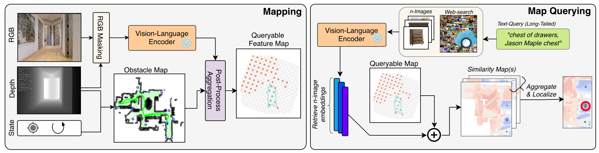
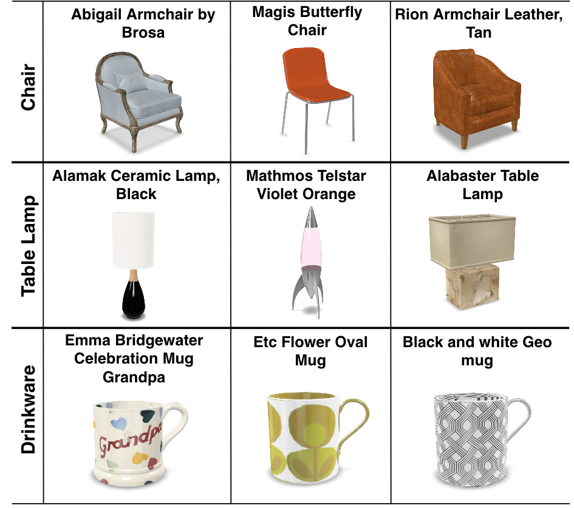
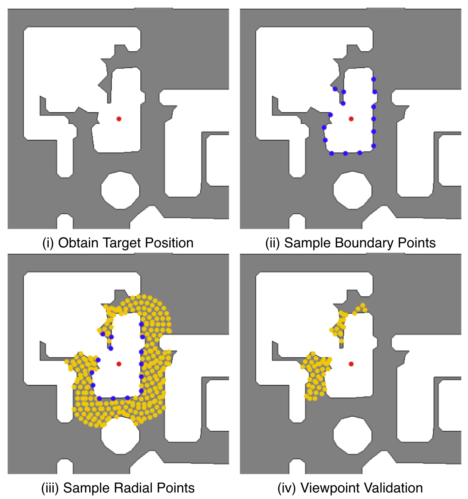
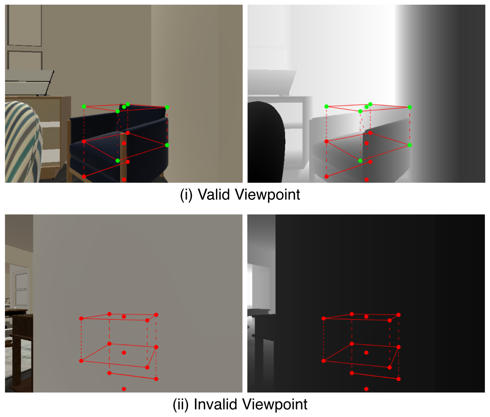
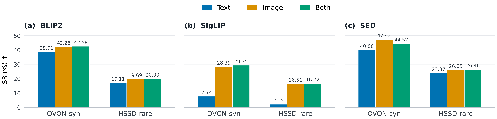
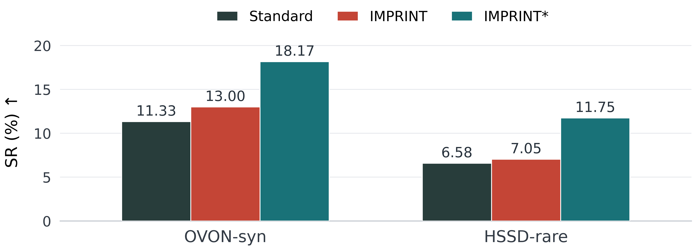

Retrieve
Retrieve N images from the web using the target text query.
Motivation
Semantic-map-based ObjectNav relies on text queries, which become unreliable for rare or semantically specific targets.
IMPRINT enriches a target query with web-retrieved images, providing richer visual cues without retraining or modifying the navigation policy.
Method
IMPRINT enriches text queries with web-retrieved images to improve target grounding in existing navigation systems, without retraining the base policy.
The baseline pipeline comprises three stages: mapping projects visual features onto a 2D grid; map querying compares a text-query embedding with the stored features to produce a similarity map; and target localization selects the highest-scoring grid cell.
IMPRINT modifies only the map-querying stage. It retrieves visual examples of the target, encodes them with the baseline vision–language model, and aggregates their similarity maps to guide target localization. The four steps below describe this process.

Retrieve N images from the web using the target text query.
Extract image embeddings using the baseline vision–language encoder.
Compute cosine similarity between each image embedding and the map features to produce N similarity maps.
Combine the N similarity maps and select the highest-scoring grid cell as the predicted target location.
Zero-shot and model-agnostic: IMPRINT requires no additional training and leaves the underlying navigation policy unchanged.
Evaluation
We evaluate IMPRINT in two complementary settings: static phase measures target localization on a pre-built map, while online phase assesses performance within the complete navigation pipeline. Together, these settings distinguish improvements in spatial grounding from their impact on navigation success.
Static phase
We query a pre-built semantic map and compare the highest-scoring grid cell with the ground-truth target location, isolating grounding performance from navigation and detection.
Online phase
We evaluate the complete ObjectNav pipeline, with mapping, querying, detection, and navigation operating jointly throughout each episode to measure how grounding improvements translate into navigation success.
New benchmark
A fine-grained ObjectNav benchmark built on HSSD-Hab that tests subcategory-level grounding within shared parent categories.

Why Viewpoints? HSSD provides object positions and dimensions but no category-specific viewpoints. Valid viewpoints are therefore required to generate ObjectNav episodes where the target is visible and reachable.
Viewpoint Generation: Accessible boundary points are identified around each target. Candidate viewpoints are then sampled radially in nearby traversable space and oriented toward the object.
Viewpoint Validation: The target’s 3D bounds are projected into each candidate view and checked against the depth image. Candidates are rejected if all sampled target points are occluded; otherwise, they are retained as valid viewpoints.


Results
01
Image-conditioned queries improve spatial grounding across both datasets and all evaluated encoders. Gains are especially pronounced for fine-grained HSSD-rare categories.

02
Grounding gains transfer to navigation, but target detection limits their full impact. Enhanced detection unlocks substantially stronger performance.

Reference
If you find IMPRINT or HSSD-rare useful, please cite our work.
@article{akkara2026imprint,
title = {IMPRINT: Image-Conditioned Query Enrichment
for Long-Tail Object Goal Navigation},
author = {Akkara, Jelin Raphael and Ziliotto, Filippo and
Serafini, Luciano and Ballan, Lamberto and Campari, Tommaso},
journal = {arXiv preprint arXiv:2607.25106},
year = {2026}
}